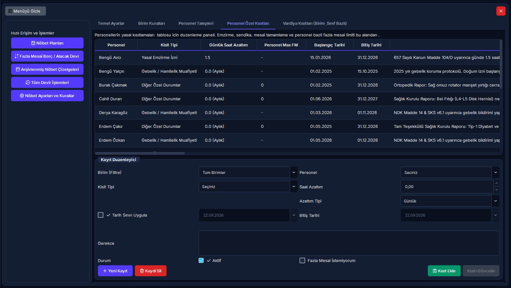

Personel Özel Sağlık Kısıtları, Yasal Haklar ve Fazla Mesai Engelleri
Gebe personelin radyasyondan korunması ve gece nöbeti yasağı, yasal süt/emzirme izinleri saat indirimleri, sendika yöneticisi mesai azaltımları ve bireysel fazla mesai yasaklama (FM Off) kuralları bu ekrandan yönetilir.
Hızlı Reçete: Bireysel Yasal Sağlık Kısıtı Tanımlama
Gebelik, süt izni, sendika azaltımı ve FM yasağı yönetimi
Yasal koruma altındaki personelin mevzuata uygun biçimde nöbetten veya fazla mesaiden otomatik muaf tutulması.
Personeli seçin, Kısıt Tipini (Gebelik, Süt İzni vb.) belirleyin, başlangıç-bitiş tarihlerini girip [Kısıt Ekle] butonuna basın.
Nöbet dağıtım motoru bu personele kesinlikle gece nöbeti yazmaz; emzirme ve sendika saatlerini aylık zorunlu çalışma hedefinden otomatik düşer.
🔍 07.4 Personel Özel Kısıtları 5N1K Bileşen Çözümleme Tablosu
| NE? (Bileşen Adı) | NEDEN? (Amacı) | NASIL? (Çalışma Mantığı) | NE ZAMAN? | KİM? |
|---|---|---|---|---|
| Personel Seçimi (Açılır Kutu) | Kısıtın uygulanacağı çalışanı belirlemek. | Departmandaki aktif personelleri listeler. İsim veya TC Kimlik ile filtrelenebilir. | Kısıt oluştururken. | İK / Nöbet Sorumlusu |
| Kısıt Tipi (Açılır Kutu) | Yasal muafiyet veya sağlık kısıtının gerekçesini seçmek. | "süt_emzirme", "gebelik", "sendika", "engelli", "ozel_mazeret" seçeneklerini içerir. Seçilen tipe göre saat azaltım kuralları devreye girer. | Rapor geldiğinde. | Yetkili Kullanıcı |
| Saat Azaltım (Günlük) | Personelin günlük mesaisinden kaç saat düşüleceğini belirlemek. | Emzirme için ilk 6 ay 3 saat, ikinci 6 ay 1.5 saat girilir. Nöbet dağıtım motoru aylık mesai hedefinden bu saatleri otomatik eksiltir. | Süt izni süresince. | İK Uzmanı |
| Personel Max Fazla Mesai | Personelin ayda yapabileceği azami fazla mesai tavanını kişiye özel sınırlamak. | 0 girilirse personele hiç FM yazılamaz. Özel sağlık kısıtında genel 60 saat tavanı yerine buradaki değer uygulanır. | Bireysel sınırlamada. | Klinik Amiri |
| Başlangıç / Bitiş Tarihi | Kısıtın geçerlilik dönemini takvimle sınırlamak. | Tarih aralığı dışında kalan aylarda kısıt otomatik hükümsüz kalır; personel normal çalışma düzenine döner. | Rapor geçerliliğinde. | Sorumlu |
| Gerekçe (Metin Kutusu) | Kısıtın dayandığı resmi rapor veya evrak numarasını kaydetmek. | Örn: "Sağlık Kurulu Rapor No: 2026/412", "Sendika Yetki Belgesi". Denetim izinde saklanır. | Kayıt esnasında. | Kullanıcı |
| Kısıt Ekle Butonu | Bireysel kısıt kaydını sisteme işlemek. | Tıklandığında kısıt tablosuna eklenir ve nöbet dağıtım motorunun çalışma matrisine dahil edilir. | Kayıt tamamlarken. | Yetkili Kullanıcı |
| Kısıt Güncelle / Sil Butonları | Süresi biten veya revize edilen raporları düzenlemek veya kaldırmak. | Seçilen kısıtın tarihini uzatır veya kısıtı sonlandırarak personeli tam kapasiteye geçirir. | Durum değişiminde. | Yönetici |
🖼️ Personel Özel Kısıtları Ekranı

📋 Adım Adım Süt İzni ve Gebelik Kısıtı Tanımlama
- [Personel Kısıtları] sekmesine geçin.
- Sağdaki Kayıt Düzenleyici alanında:
- Personel: İlgili çalışanı açılır kutudan seçin.
- Kısıt Tipi: Yasal emzirme için "süt_emzirme" veya gebelik için "gebelik" seçin.
- Saat Azaltım: Süt izninin ilk 6 ayı için 3 saat, ikinci 6 ayı için 1.5 saat yazın.
- Personel Max FM: Gebe personelde mutlaka 0 saat olarak bırakın.
- Başlangıç / Bitiş Tarihi: Resmi raporun geçerlilik tarihlerini girin.
- Gerekçe: "Doğum Sonrası Süt İzni Raporu" yazın.
- [Kısıt Ekle] butonuna tıklayın.
- Artık nöbet dağıtım motoru bu personeli kesinlikle gece nöbetlerine ve fazla mesaiye yazmayacak; zorunlu mesai hedefini azaltılan saatler üzerinden hesaplayacaktır.
❓ Sıkça Sorulan Sorular (Sağlık Kısıtları)
Gebe personele acil durumda dahi gece nöbeti yazılabilir mi? ▾
KESİNLİKLE HAYIR. Gebelik durumu, 50 yaş muafiyeti gibi esnetilebilir bir kurum tercihi değildir; NDK mevzuatı ve İş Kanunu gereği mutlak kanuni yasaktır. Sistem gebe personelin gece nöbetine ve fazla mesaiye atanmasını tamamen kilitler; ayrıca fetüs koruması için yıllık doz limitini 1 mSv'e düşürür.
Sendika yöneticisi mesai indirimi ne kadardır? ▾
Mevzuat gereği sendika şube yöneticisi olan 657 memurlar için haftalık 4 saat, 4857 işçiler için haftalık 2 saat mesai indirimi tanımlanır. Nöbet dağıtım motoru bu saatleri personelin haftalık hedefinden otomatik olarak düşer.